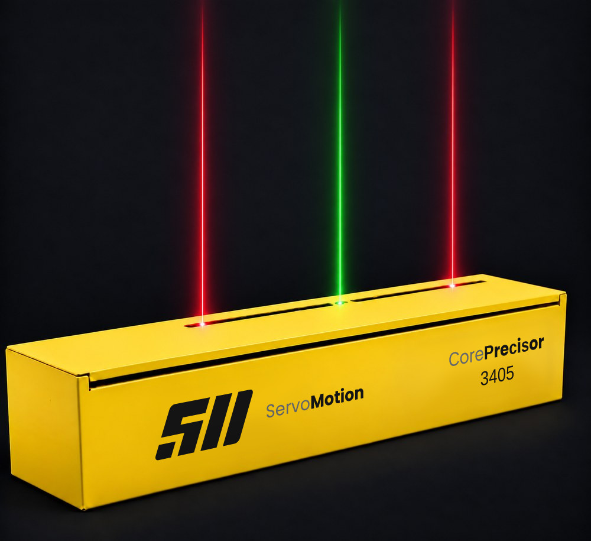

01
RECIPE
Position and width values for the product are entered through the control interface.
SERVOMOTION · SEQUENTIAL LASER POSITIONING
Core Precisor moves laser lines automatically to target positions defined by servo control. Independent or symmetrical movement options adapt the system to different alignment needs, and the recipe-based control structure provides repeatable position references throughout production.

WORKING PRINCIPLE
PLC-controlled servo axes carry the laser modules to the defined targets. The projected lines serve as a reference for material placement or machine setting; the physical alignment is performed by the operator. The position here is not a setting made once at installation — it is recipe data.
01
Position and width values for the product are entered through the control interface.
02
The PLC sends the position commands to the servo axes according to the selected movement configuration.
03
Lines travel to the target positions under closed-loop control and stop there.
04
The references stay in place; the same recipe returns the lines to the same positions every time.
SIX MOVEMENT CONFIGURATIONS
The configuration is selected according to how the lines have to move, not simply by laser count.
All lasers move within one continuous zone along the body; positions are reached one after another.
Two independent zones; two lines can be positioned at the same time, which shortens the setup for symmetrical work.
A separately mounted laser keeps the centre or a datum line permanently visible while the moving lasers work.
Two lines move mirrored around the centre, which suits width-based recipes.
The interactive configuration matrix and the housing dimensioning tool are available on the Turkish product page: Core Precisor (TR) →
SYSTEM COMPONENTS
Servo-driven linear motion inside a closed profile, protected against the line environment.
Red or green modules with adjustable focus, selected according to surface and ambient light.
Industrial controller and drive with closed-loop position feedback.
Recipe definition, status display and diagnostics at the line.
Motion configurations
Core Precisor offers independent and symmetrical laser motion in a single- or dual-channel axis layout. A fixed centre reference laser can be added where it is needed. Pick a motion configuration and study how the laser modules position themselves across a 1,200 mm working width. The view is schematic; travel limits and module layout are defined by the requirements of the application.
The view is schematic. The time assumes 1,000 mm/s and a 0.25 s dwell per step; the real acceleration profile, the spacing between modules and the operator’s own setting time are not modelled. It is not the total setup time.
Features
Travel distance, projection conditions and control infrastructure are assessed together, so that the laser reference is configured to suit the line’s setting method and its working area.
The positional accuracy of the target line. Working distance and mounting conditions are assessed during selection.
High-dynamic motion that shortens the transition between recipe positions.
Red or green laser options on both fixed and moving modules. Colour is chosen according to the working surface and ambient lighting.
Options for communicating with the line control system. Protocol and connection scope are defined during the project.
Body options from 600 to 4,000 mm; longer bodies are designed on request. Usable travel and mounting layout follow the dimensions of the application.
A cover that opens and closes easily for laser replacement and calibration.
SAFETY
The class of the line laser module used in the system is stated on the product label and in the user manual delivered with it. Modules must be operated under the conditions defined in that manual.
The beam must not be viewed directly, and reflection angles on glossy surfaces are assessed together during installation. The operator’s working position is reviewed at commissioning.
The system must be de-energised and the line brought to a safe state before optics cleaning and mechanical checks.
The industrial positioning laser modules used in the system have been assessed against EN 55011 and EN 55032 electromagnetic compatibility requirements and certified by TÜV Rheinland LGA Products GmbH (Cert. No. AK 50498967 0001). Download the certificate (PDF).
The declaration of conformity and the technical file for the delivered system are supplied with the delivery package, project by project.
SPECIFICATIONS
| Laser colour | Red or green |
|---|---|
| Line width | 1 mm |
| Focus | Adjustable |
| Laser supply | 12–24 VDC |
| Laser protection class | IP54 |
| Laser class | Classified to IEC 60825-1 · Class 2M or 3R depending on the selected optical power; the exact class is stated on the product label and in the user manual |
| Wavelength | Red 635–660 nm · green 515–532 nm · depending on module |
| Laser connector | M12, 4 pin |
| Projection accuracy | ± 1.00 mm |
|---|---|
| Positioning speed | up to 1000 mm/s |
| Body length | up to 4,000 mm · longer on request |
| Movement configurations | 6 models (K1–K6) |
| Travel distance | Customised to the machine |
| Service access | Damped hinged cover |
| Body protection class | IP54 · higher protection on request |
| System weight | Varies with application and body length · stated in the quotation |
| Mounting interface | Defined per application · adapter plate to the existing frame or a new support |
| Controller | Industrial PLC |
|---|---|
| Drive | Servo drive |
| Protocol | Industrial fieldbus (ProfiNet · EtherNet/IP™) |
| Axis management | Independent and symmetrical motion control |
| Position feedback | Closed-loop control with encoder |
| Diagnostics | Status and fault monitoring |
| Supply | 220 V AC 50 Hz · from the control cabinet |
| Power consumption | Varies with laser count and configuration · given in the project file |
| Operating environment | Enclosed production area · +10 … +40 °C · 10–90 % RH, non-condensing |
| Display | PCAP touch screen |
|---|---|
| Processing / storage | Industrial platform · solid-state storage |
| Interfaces | Industrial and peripheral connection options |
| Network | Ethernet and wireless options |
| Video output | External display connection |
| Supply | DC supply |
Values apply to example configurations. Final performance and connectivity are evaluated together with motion load, working distance and mounting conditions. Download the data sheet (PDF, TR) →
For lines that do not require multiple simultaneous projections, Core Precisor delivers the same automation capability and accuracy with a leaner structure and an optimised budget.
We share technical articles, application examples and product updates by e-mail as they are published.
Questions: info@servomotion.com.tr